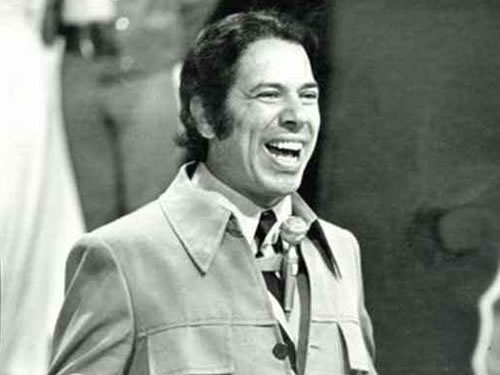

Senor Abravanel

Sobre mim:
"Atualmente atuo como apresentador de programas de entretenimento (SBT)"
Nível de Escolaridade:
-
Ensino Fundamental: Jovino Machado (1945);
-
Ensino Médio: Padre Jerônimo Lauwen (1948);
-
Técnico: Informática - IFPB (1950);
Trabalhos Realizados:
-
Varejista De 1960 até 1980;